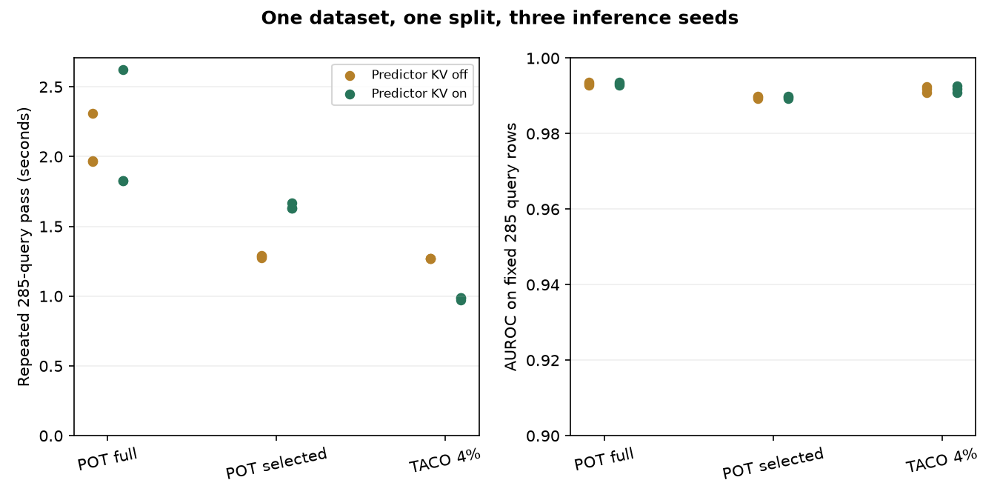

Context-state contract · B18a¶
Lesson · Student lab · Experiment contract
Identify one prediction¶
Checkpoint SHA256 + fitted preprocessing + ordered support IDs/features/labels + retrieval policy + compression setting + inference seeds/transforms + dtype + implementation + query. Query memoization also needs query identity. An explanation adds the method/estimand, feature set and background identity.
State dependencies¶
| Edit | Support cache | Prediction | Explanation | Distilled student |
|---|---|---|---|---|
| Support/preprocessing | Rebuild | Recompute | Recompute | Revalidate/retrain |
| Query only | Reuse | Recompute | Recompute | Reuse |
| Background only | Reuse | Reuse | Recompute | Reuse |
Four mechanisms¶
KV caching retains attention state. Selection retains real rows. TACO jointly learns a compressor and predictor and retains latent context. Distillation learns a separate predictor from teacher outputs. The current TACO release already caches compressed context in fit_preprocessors; fit_with_cache additionally caches predictor attention.
Chronology¶
Labeled support requires event≤cutoff AND arrival≤cutoff AND label_available≤cutoff. Student teacher targets must exclude the row's own label; chronological tasks require earlier-available teacher context. Hashing proves identity, not timestamp truth.
Cost and explanation¶
Total = setup + all query calls + all rebuilds + all explanation calls. Break-even requires positive warm savings and enough requests before the next update. GPU peak allocation is not isolated KV storage.
Replacement contrast = f(x) − average_b f(x with x_j=b_j). It is not SHAP or a causal effect. Foreground16 × background8 requires16+128=144 prediction rows. Changing the background can change the contrast without changing the predictor.
Evidence¶
| Arm | KV | AUROC mean | Log loss mean | Fit s mean | Repeated pass s mean |
|---|---|---|---|---|---|
| POT-full | off | 0.9932 | 0.0852 | 0.2098 | 2.0810 |
| POT-full | on | 0.9932 | 0.0852 | 1.0076 | 2.0926 |
| POT-selected | off | 0.9896 | 0.1235 | 0.1443 | 1.2839 |
| POT-selected | on | 0.9896 | 0.1235 | 0.4911 | 1.6426 |
| TACO4 | off | 0.9917 | 0.0876 | 0.2584 | 1.2707 |
| TACO4 | on | 0.9917 | 0.0882 | 2.4880 | 0.9815 |
All 18 fits completed. Cached/uncached agreement at the predeclared1e-5 tolerance: 6/9 pairs pass. Failed pairs: TACO4 seed0 Δ=0.0280723, TACO4 seed1 Δ=0.0319225, TACO4 seed2 Δ=0.0279807. Keep this failure visible; these modes are not interchangeable to the declared tolerance. Three repeated query passes measure warm reuse; they are not independent predictive trials.

Primary readings: TACO §3–4, TabPFN-2.5 distillation, TabPFN interpretation. Ask your teacher to review your state/update contract.